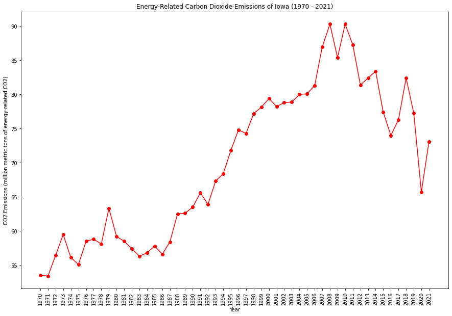

|  | |
|
Iowa is a leader in wind energy production, with a significant portion of its electricity coming from wind power. The state has been proactive in promoting renewable energy and energy efficiency. Agriculture is a key sector, and there are efforts to explore sustainable practices in farming.